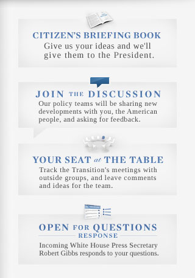

Spend Taxpayer Money Wisely
- Protect Whistleblowers: Often the best source of information about waste, fraud, and abuse in government is an existing government employee committed to public integrity and willing to speak out. Such acts of courage and patriotism, which can sometimes save lives and often save taxpayer dollars, should be encouraged rather than stifled. We need to empower federal employees as watchdogs of wrongdoing and partners in performance. Barack Obama will strengthen whistleblower laws to protect federal workers who expose waste, fraud, and abuse of authority in government. Obama will ensure that federal agencies expedite the process for reviewing whistleblower claims and whistleblowers have full access to courts and due process.
Your Administration
Open Government

Transition Directory

GSA Transition Directory
The Transition Directory was developed to introduce members of the Transition and the incoming Administration to the Federal government resources available to them.